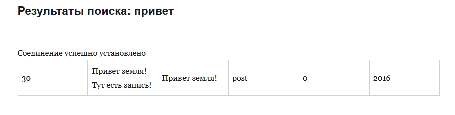
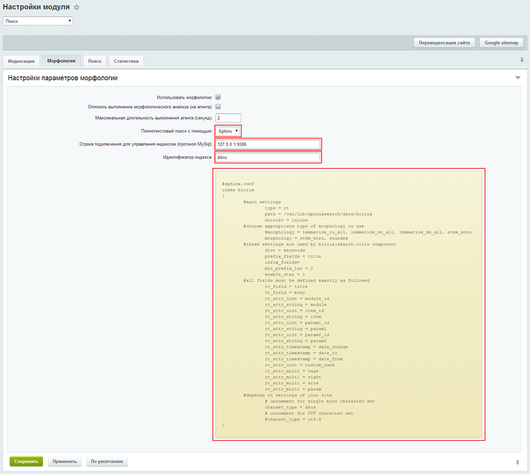
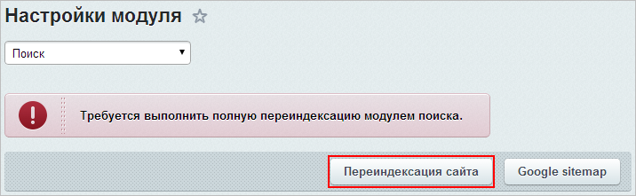

Установка и настройка Sphinx
Относительно недавно, мне было нужно настроить sphinxsearch для одного проекта на Bitrix.
Поэтому в этой статье я поделюсь с вами информацией как просто это сделать.
И так, Sphinx (англ. SQL Phrase Index) — система полнотекстового поиска, разработанная Андреем Аксёновым и распространяемая по лицензии GNU GPL.
Отличительной особенностью является высокая скорость индексации и поиска, а также интеграция с существующими СУБД (MySQL, PostgreSQL) и API для распространённых языков веб-программирования (официально поддерживаются PHP, Python, Java; существуют реализованные сообществом API для Perl, Ruby,.NET[1] и C++). Так что интегрировать эту систему реально и достаточно просто.
Рассмотрим основные плюсы Sphinx перед обычными (встроенными) системами поиска:
- Высокая скорость индексации (до 10-15 МБ/сек на каждое процессорное ядро);
- Высокая скорость поиска (до 150—250 запросов в секунду на каждое процессорное ядро с 1 000 000 документов);
- Высокая масштабируемость (крупнейший известный кластер индексирует до 3 000 000 000 документов и поддерживает более 50 миллионов запросов в день);
- Поддержка распределенного поиска;
- Поддержка нескольких полей полнотекстового поиска в документе (до 32 по умолчанию);
- Поддержка нескольких дополнительных атрибутов для каждого документа (то есть группы, временные метки и т. д.);
- Поддержка стоп-слов;
- Поддержка однобайтовых кодировок и UTF-8;
- Поддержка морфологического поиска — имеются встроенные модули для английского, русского и чешского языков; доступны модули для французского, испанского, португальского, итальянского, румынского, немецкого, голландского, шведского, норвежского, датского, финского, венгерского языков;
- Нативная поддержка MySQL (всех типов таблиц, в том числе MyISAM, InnoDB, NDB, архив и т. д.);
- Нативная поддержка PostgreSQL;
Поддержка ODBC совместимых баз данных (MS SQL, Oracle и т. д.).
Впечатляет? Вот небольшой список тех кто использует Sphinx:
- Хабрахабр
- Викимапия
- Буквоед
- BitTorrent-трекер Пиратская бухта
Перейдем к установке.
Все операции проводились на Ubuntu 14.04 LTS, но инструкция должна подойти и для более свежих версий.
Добавляем репозиторий со свежим sphinx
|
1 |
add-apt-repository ppa:builds/sphinxsearch-rel22 |
Далее обновляем пакеты и устанавливаем сам Sphinx
|
1 |
apt-get update |
|
1 |
apt-get install sphinxsearch |
Теперь создадим конфиг Sphinx c именем sphinx.conf в каталоге /etc/sphinxsearch/
Вот пример конфига Sphinx:
|
1 2 3 4 5 6 7 8 9 10 11 12 13 14 15 16 17 18 19 |
source src1 { type = mysql sql_host = localhost sql_user = root sql_pass = password sql_db = test sql_port = 3306 # optional, default is 3306 sql_query = \ SELECT id, group_id, UNIX_TIMESTAMP(date_added) AS date_added, title, content \ FROM documents sql_attr_uint = group_id sql_attr_timestamp = date_added sql_query_info = SELECT * FROM documents WHERE id=$id } |
Рассмотрим секции конфига по порядку:
- type — тип источника из которого мы будем брать данные, в данном случае БД mysql
- sql_host — адрес сервера с БД
- sql_user — пользователь для подключения к БД
- sql_pass — пароль пользователя
- sql_db — имя БД из которой мы будем импортировать данные для поиска
- sql_port — порт подключения к БД, в данном случае используется стандартный порт Mysql
- sql_query — SQL запрос для импорта данных, в которых нужно проводить поиск
- sql_attr_uint и sql_attr_timestamp используемые атрибуты.
- sql_query_info — вспомогательный запрос, не обязательный атрибут. В последних версиях игнорируется. Изначально его удобно использовать для дебага в консоли.
Давайте разберем из каких секций может состоять конфиг Sphinx
- source — Источник данных, откуда мы делаем импорт и будем проводить поиск
- index — Индекс это специальная структура данных, которая помогает Sphinx проводить поиск именно по ней.
Дополнительно рассмотрим таблицу атрибутов, которые можно использовать в Sphinx.
| Makes | Matches Query | Sortable | Groupable | Filterable | Retreivable | |
|---|---|---|---|---|---|---|
| first column | Document ID | YES | [1] | YES | ALWAYS | |
| (no definition) | FIELD | YES | [2] | |||
| sql_attr_uint | ATTRIBUTE | YES | YES | YES | YES | |
| sql_attr_bool | ATTRIBUTE | YES | YES | YES | YES | |
| sql_attr_bigint | ATTRIBUTE | YES | YES | YES | YES | |
| sql_attr_timestamp | ATTRIBUTE | YES | YES | YES | YES | |
| sql_attr_str2ordinal | ATTRIBUTE | YES | YES | [3] | [3] | |
| sql_attr_float | ATTRIBUTE | YES | YES | YES | YES | |
| sql_attr_multi | ATTRIBUTE | YES | YES | YES | YES | |
| sql_attr_string | ATTRIBUTE | YES | YES | YES | ||
| sql_attr_str2wordcount | ATTRIBUTE | YES | [3] | YES | YES | |
| sql_field_string | ATTRIBUTE + FIELD | YES | YES | YES | [2] | YES |
| sql_field_str2wordcount | ATTRIBUTE + FIELD | YES | YES | [3] | YES | YES |
| sql_joined_field | FIELD | YES |
Ниже мы рассмотрим реальный пример интеграции Sphinx в CMS WordPress , без использования плагинов.
Составим следующий конфиг Sphinx:
|
1 2 3 4 5 6 7 8 9 10 11 12 13 14 15 16 17 18 19 20 21 22 23 24 25 26 27 28 29 30 31 32 33 34 35 36 37 38 39 40 41 42 43 44 45 46 47 48 49 50 |
source src1 { type = mysql sql_host = localhost sql_user = admin_wp sql_pass = 123456 # change this to your root users MySQL password sql_db = admin_wp sql_port = 3306 sql_query_pre = SET NAMES utf8 # SELECT id, group_id, UNIX_TIMESTAMP(date_added) AS date_added, title, content \ # FROM documents sql_query = SELECT ID, post_content, post_title, post_status, post_type, guid, post_date FROM wp_posts WHERE `post_status` = 'publish' AND `post_type` = 'post' sql_attr_uint = ID # sql_attr_string = post_title sql_field_string = post_title sql_attr_string = post_type sql_attr_uint = guid sql_field_string = post_content sql_attr_timestamp = post_date #sql_query_info = SELECT * FROM wp_posts WHERE id=$ID } index test1 { source = src1 path = /var/lib/sphinxsearch/data/test1 docinfo = extern # charset_type = utf8 min_word_len = 3 enable_star = 1 min_infix_len = 3 } searchd { # listen = 9312 listen = 127.0.0.1:9306:mysql41 log = /var/log/sphinxsearch/searchd.log query_log = /var/log/sphinxsearch/query.log read_timeout = 5 max_children = 30 pid_file = /var/run/sphinxsearch/searchd.pid max_matches = 1000 seamless_rotate = 1 preopen_indexes = 1 unlink_old = 1 binlog_path = /var/lib/sphinxsearch/data } |
В данном примере мы будем проводить поиск по постам в блоге, нас интересуют следующие данные в БД wordpress:
- ID
- post_title
- post_type
- guid
- post_content
- post_date
Этих данных нам достаточно для идентификации постов WordPress при поиске через Sphinx.
Разберем сам конфиг.
Источник данных у нас Mysql
|
1 2 3 |
source src1 { type = mysql |
Подключение к нашей БД с wordpress
|
1 2 3 4 5 |
sql_host = localhost sql_user = admin_wp sql_pass = 123456 # change this to your root users MySQL password sql_db = admin_wp sql_port = 3306 |
SQL запрос для импорта данных
|
1 |
sql_query = SELECT ID, post_content, post_title, post_status, post_type, guid, post_date FROM wp_posts WHERE `post_status` = 'publish' AND `post_type` = 'post' |
Устанавливаем атрибуты
|
1 2 3 4 5 6 7 |
sql_attr_uint = ID # sql_attr_string = post_title sql_field_string = post_title sql_attr_string = post_type sql_attr_uint = guid sql_field_string = post_content sql_attr_timestamp = post_date |
Далее идет сам индекс
|
1 2 3 4 5 6 7 8 9 10 |
index test1 { source = src1 path = /var/lib/sphinxsearch/data/test1 docinfo = extern # charset_type = utf8 min_word_len = 3 enable_star = 1 min_infix_len = 3 } |
Рассмотрим индекс поближе:
- source — наш источник данных
- path — системный путь, где будет лежать индекс
- docinfo — способ хранения индекса может быть none, inline, extern
- charset_type — кодировка, в данном случае я ее не использую
- min_word_len — минимальный размер слова
- enable_star — позволяет использовать звездочки в поисковых запросах.
- min_infix_len — позволяет индексировать части слов
И последняя часть конфига, настройка самой службы Sphinx
|
1 2 3 4 5 6 7 8 9 10 11 12 13 14 15 |
searchd { # listen = 9312 listen = 127.0.0.1:9306:mysql41 log = /var/log/sphinxsearch/searchd.log query_log = /var/log/sphinxsearch/query.log read_timeout = 5 max_children = 30 pid_file = /var/run/sphinxsearch/searchd.pid max_matches = 1000 seamless_rotate = 1 preopen_indexes = 1 unlink_old = 1 binlog_path = /var/lib/sphinxsearch/data } |
Тут мы указываем на каком порту слушать запросы к sphinx, где хранить логи, timeout на чтение, максимальное кол-во параллельных поисковых запросов(30).
Стоит отметить что строка
|
1 |
listen = 127.0.0.1:9306:mysql41 |
позволит нам использовать при поиске синтаксис аля mysql, тоесть это значит что мы может подключаться к Sphinx нативными средствами для работы с Mysql и проводить поиск через них. Сейчас покажу как мы это сделаем в WordPress на PHP.
Сохраняем наш конфиг и перезапускаем службу Sphinx
|
1 |
service sphinxsearch restart |
Следующей командой мы можем проиндексировать все существующие индексы Sphinx
|
1 |
indexer --all |
Следующей командой мы проиндексируем все изменения в индексе test1
|
1 |
indexer test1 --rotate --all |
Теперь в WordPress я изменю стандартную тему Twenty Sixteen , а именно файл поиска — /wp-content/themes/twentysixteen/search.php
В сам файл я добавлю следующий код, для нативной работы со Sphinx через PHP
|
1 2 3 4 5 6 7 8 9 10 11 12 13 14 15 16 17 |
$link = mysql_connect('127.0.0.1:9306') or die('Не удалось соединиться: ' . mysql_error()); echo 'Соединение успешно установлено'; $query = "SELECT * FROM test1 WHERE MATCH('@post_content $s')"; $result = mysql_query($query) or die('Запрос не удался: ' . mysql_error()); echo "<table>\n"; while ($line = mysql_fetch_array($result, MYSQL_ASSOC)) { echo "\t<tr>\n"; foreach ($line as $col_value) { echo "\t\t<td>$col_value</td>\n"; } echo "\t</tr>\n"; } echo "</table>\n"; |
Что мы тут делаем? Да все просто:
- Подключаемся к Sphinx как к mysql серверу
- Проверяем подключение
- Выполняем поисковый запрос
- Формируем таблицу, по найденным результатам
Выглядит это вот так, я выполнил поиск по слову «привет»
Результаты выглядят так:

Собственно в таблице вы можете видеть следующие данные:
- ID поста
- Содержимое поста
- Заголовок поста
- тип поста
- GUID
- Дату
Сам пример файла search.php вы можете найти тут
Чтобы поиск в Sphinx обновлялся , вам нужно добавить в Cron задания по обновлению индекса.
В данном случае достаточно выполнить crontab -e и добавить в него строку
|
1 |
*/10 * * * * indexer test1 --rotate --all |
Для обновления нашего индекса test1 каждые 10 минут.
Из консоли Ubuntu вы можете подключиться к Sphinx через mysql клиент
|
1 |
mysql -P 9306 -h 127.0.0.1 |
Еще вы можете использовать дельта индексы, но об этом я постараюсь рассказать в рамках другой статьи.
Также дополню что для Bitrix настройка не отличается особенной сложностью, все описано в документации.
Но продублирую эту информацию для вас тут.
Создаем конфиг Sphinx для Bitrix
|
1 2 3 4 5 6 7 8 9 10 11 12 13 14 15 16 17 18 19 20 21 22 23 24 25 26 27 28 29 30 31 32 33 34 35 36 37 38 39 40 41 42 43 44 45 46 47 48 49 50 51 52 53 54 55 56 57 58 59 60 61 62 63 64 65 66 |
searchd { listen = 9312 listen = 9306:mysql41 log = /var/log/sphinxsearch/searchd.log query_log = /var/log/sphinxsearch/query.log read_timeout = 5 max_children = 30 pid_file = /var/run/sphinxsearch/searchd.pid max_matches = 1000 seamless_rotate = 1 preopen_indexes = 1 unlink_old = 1 workers = threads # for RT to work binlog_path = /var/lib/sphinxsearch/data/ binlog_max_log_size = 512M binlog_flush = 2 rt_flush_period = 3600 } indexer { lemmatizer_cache = 128M lemmatizer_base = /etc/sphinxsearch/dicts/ # lemmatizer_base в Sphinx 2.2.1+ располагается в секции common } index bitrix { #main settings type = rt path = /var/lib/sphinxsearch/data/bitrix docinfo = inline #choose appropriate type of morphology to use #morphology = lemmatize_ru_all, lemmatize_en_all, lemmatize_de_all, stem_enru morphology = stem_enru, soundex #these settings are used by bitrix:search.title component dict = keywords prefix_fields = title infix_fields= min_prefix_len = 2 enable_star = 1 #all fields must be defined exactly as followed rt_field = title rt_field = body rt_attr_uint = module_id rt_attr_string = module rt_attr_uint = item_id rt_attr_string = item rt_attr_uint = param1_id rt_attr_string = param1 rt_attr_uint = param2_id rt_attr_string = param2 rt_attr_timestamp = date_change rt_attr_timestamp = date_to rt_attr_timestamp = date_from rt_attr_uint = custom_rank rt_attr_multi = tags rt_attr_multi = right rt_attr_multi = site rt_attr_multi = param #depends on settings of your site # uncomment for single byte character set charset_type = sbcs # uncomment for UTF character set #charset_type = utf-8 } |
Скачиваем словари для Sphinx тут и копируем их в каталог /etc/sphinxsearch/dicts/
Перезапускаем службу Sphinx
|
1 |
service sphinxsearch restart |
Далее переходим на страницу настройки модуля «Поиск» (Настройки > Настройки продукта > Настройки модулей > Поиск) и указываем Sphinx как основной поиск.

Далее в Bitrix необходимо выполнить переиндексацию поиска сайта

На этом настройка связки Sphinx + Bitrix завершена, как видите тут нет ничего сложного, однако пример с WordPress и PHP показывает что возможности интеграции полнотекстового движка Sphinx впечатляющие =)
Удачной вам настройки!
Добавить комментарий